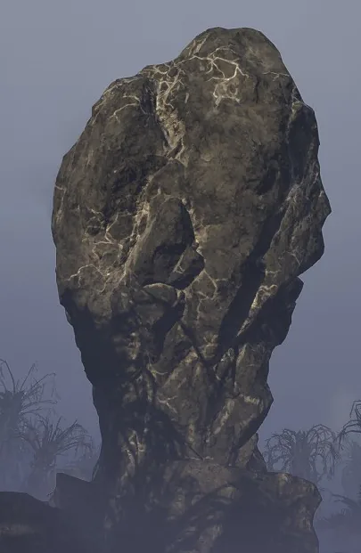
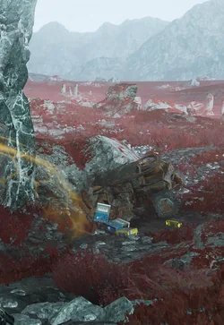
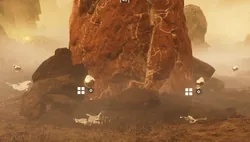
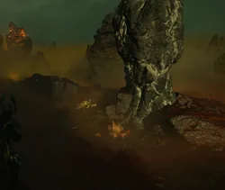

Super Sample Rock
 Silvery Rock
Silvery Rock
基本信息 信息
阵营
Nature
描述
A chicken drumstick shaped rock with silver veins running across
Super Sample Rock 是 小型 自然 建筑 that may generate on missions. It is the only point of interest where 超级样本 can spawn.
描述
the Super Sample Rock takes on the shape of a large, bulbous rock, with silver-colored veins running through it. It has two different 变体.
- If it is the Super Uranium 变体, you can find puddles of a reflective, mercury-like liquid, with floating Super 稀有样本 (a.k.a Super Uranium) above them, the amount depending on 难度. This 变体 can only spawn on
 极难 and above.
极难 and above.
- If it is the Crashed FRV 变体, you can find a 支援武器, crates of 治疗剂 & grenades, and a 背景 pickup, the SEAF Communications Device. This 变体 can be found on any 难度.
This point of interest can be found on Metropolis missions as the Super Uranium 变体, and serves as a city decoration, surrounded by benches. On 终结族 missions on  自杀任务 难度 and above, the corpses of bugs may be found around the rock.
自杀任务 难度 and above, the corpses of bugs may be found around the rock.
次要特殊地点
| Variation | 图像 | 目录 | Note |
|---|---|---|---|
| Crashed FRV |  |
Spawns commonly on | |
| 超铀 |  |
|
数量 of 超级样本 varies by 难度. Guaranteed on difficulties: * * * * * |
| Bug World |  |
未知 | 未知 spawn conditions. |
战术信息
琐事
- Due to the rock's distinctive shape and 外观, it has garnered many less-than-flattering nicknames from members of the 绝地潜兵 community.